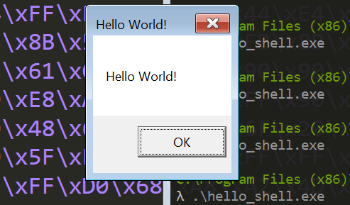

BloG
Windows x86 Shellcode : Using DLL's Pt 2
January 4, 2019
In the last post, I wrote about how to load DLL's and find functions within them. I wrote a position independent method for finding the address of LoadLibraryA and a version of GetProcAddress that takes the base address of a DLL and the ror-13-additive hash of the name of the function you're looking for. We use the hash of strings rather than the strings themselves to save space in our shellcode and to add a thin layer of obfuscation.
This time, I'll be using the functions from the last post to make a Hello World example. The shellcode will load the user32 DLL, find the address of MessageBoxA, and call it with the string "Hello World!" as an argument. We'll then take this shellcode and run it using a very basic buffer overflow.
Writing the Shellcode:
The first thing that we're going to do is call find_kernel32_base. We're then going to push the return value and the hash for LoadLibraryA and call find_function_by_hash. We now should have the address of LoadLibraryA in the eax register; all we need to load user32.dll is to push the string "user32" and call eax.
While we could make a stack string to pass to LoadLibraryA, it will use fewer bytes to include the string "user32" in our shellcode and push the address of the string. Since our shellcode is position independent, this requires finding the address of our shellcode on the fly. There are a couple ways to do this; however, we will use the call/pop method for the sake of simplicity.
Call/Pop:
Recall that when a call instruction is executed, the address of the byte directly following the call is pushed to the stack. In this sense, this
call .targetand this
push eip+7 #constant depends on number of opcode bytes for call
jmp .targetare equivalent. Thus, if we execute a call instruction and then execute a pop instruction, we will have a pointer to a location within our shellcode. The following code uses this technique to put a pointer to the string "user32" in eax:
main:
call .target
db 'user32'0
target:
pop eax